10 部片单 · 恐怖 / 科幻 / 惊悚 / 悬疑 / 剧情
| # | 片名 | 类型 | 评分 / 状态 |
|---|---|---|---|
| 01 | 罗拉秘史 | 悬疑 / 惊悚 / 黑色电影（恋物与谋杀） | 7.8 / 100% / 7.9 |
| 02 | 死吻 | 惊悚 / 悬疑 / 黑色电影（冷战寓言） | 7.0 / 98% / 7.5 |
| 03 | 猎人之夜 | 惊悚 / 恐怖 / 黑色电影（暗黑童话） | 8.0 / 93% / 8.0 |
| 04 | 历劫佳人 | 悬疑 / 惊悚 / 黑色电影（边境腐败） | 8.0 / 96% / 8.0 |
| 05 | 无间道 | 剧情 / 悬疑 / 惊悚（警匪卧底） | 9.3 / 94% / 8.1 |
| 06 | 谜一样的双眼 | 剧情 / 悬疑 / 惊悚（记忆与司法） | 8.5 / 91% / 79 |
| 07 | 潜行者 | 科幻 / 剧情 / 惊悚（形而上科幻） | 8.8 / 8.2 / 天主教人道精神奖 |
| 08 | 德州电锯杀人狂 | 恐怖 / 惊悚（剥削恐怖开山之作） | 7.4 / 85% / 91 |
| 09 | 梦之安魂曲 | 剧情 / 惊悚（成瘾与崩塌） | 8.7 / 78% / 71 |
| 10 | 魔鬼代言人 | 惊悚 / 悬疑 / 剧情（浮士德） | 8.3 / 66% / 60 |
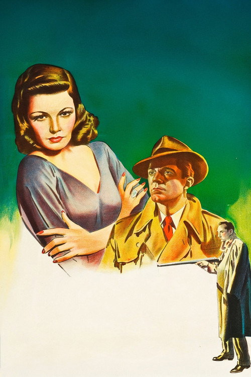
罗拉秘史 Laura
「一个警探爱上了一具尸体——直到她活着走回自己的家。」
剧情梗概
纽约。广告公司女高管罗拉·亨特被人用猎枪打死在自家公寓门口，脸被打得无法辨认。警探麦克弗森接手此案，他先找到写罗拉专栏出名的毒舌名流华度·莱德克，从那张嘴里一点一点拼出这个女人的轮廓：漂亮、野心勃勃、身边围着三个各怀心思的男人。麦克每夜坐在罗拉家那幅巨大的肖像下喝酒，越查越像是爱上了她。某个夜里他睡着了，醒来时，罗拉就那样活着站在自己家门口——那么死的人是谁。
亮点
- 黑色电影里最负盛名的「恋上死者」文本。1945 年奥斯卡最佳黑白摄影，1999 年入选美国国家电影登记部。
- 奥托·普雷明格原本只是制片，中途把原导演鲁宾·马莫利安换掉、自己上——这部片让他从 B 级片匠变成真正的作者。
- 大卫·拉克辛写的主题曲《Laura》先有旋律、后配电影，后来成了爵士标准曲，是配乐史上罕见的反向案例。
- AFI 把它列进百年百大惊栗片第 73 名、百年电影配乐第 7 名、十大悬疑片第 4 名。
- 达纳·安德鲁斯的麦克是硬汉侦探谱系里少见的「被迷住的那一个」——他看的不是案子，是那幅画像。
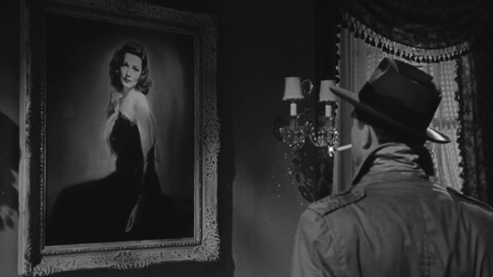
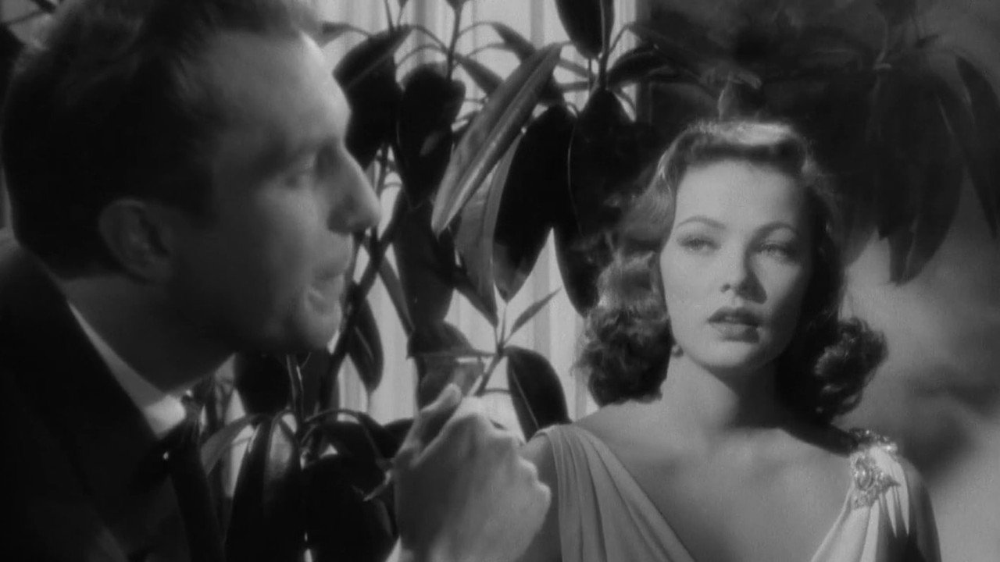
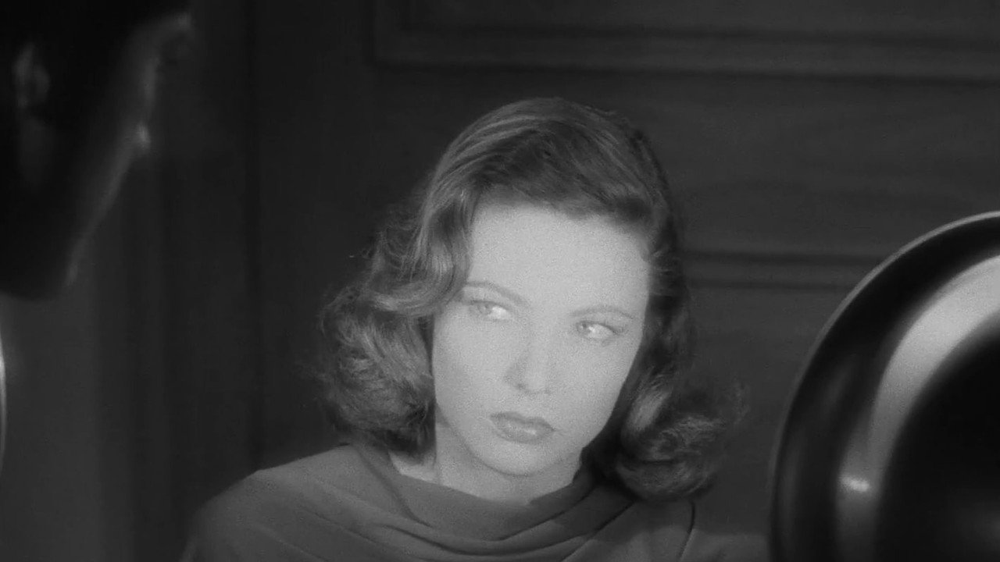
导演与主创 · 他们的历史作品
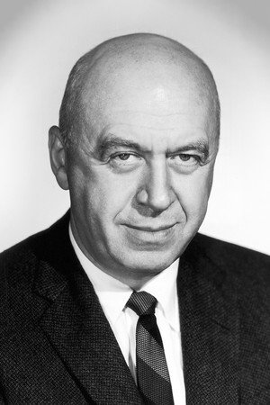
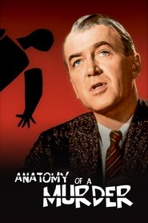
桃色血案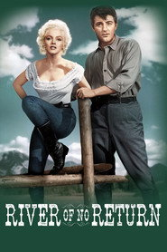
大江东去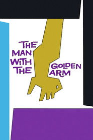
金臂人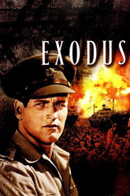
出埃及记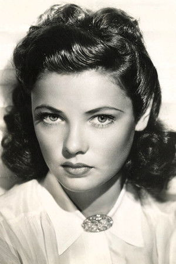
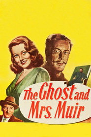
幽灵与未亡人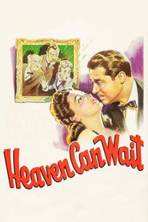
天堂可以等待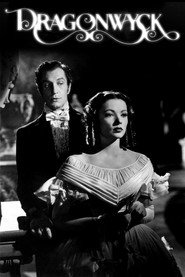
辣手蛇心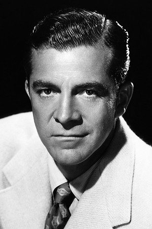
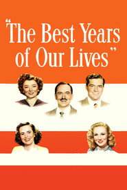
黄金时代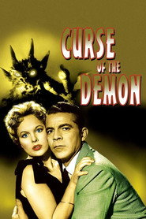
恶魔之夜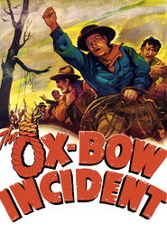
黄牛惨案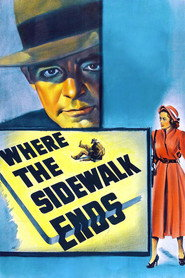
铁牛金刚短评（轻微剧透）
《罗拉秘史》最妙的地方，是它把一场谋杀调查拍成了单恋。麦克不是被案件吸引，他是被一幅画吸引：一个已经死掉的女人、别人转述的她的每句话、她衣柜里的睡袍、她用过的香水，这些东西拼出了一个他从来没见过的人，然后他爱上了这个拼图。所以当罗拉真的在半夜走回来时，观众和他一样措手不及——恐怖不在于鬼，在于「你以为已经结束的东西突然有了体温」。普雷明格的镜头很安静，几乎全是对话场景，但他把气氛压得极紧：华度的每一句刻薄话都像是刀背，罗拉的画像永远停在画面正中。缺点要说：豆瓣 7.8 属中上，确实有观众觉得它「话太多、动作太少」，情节的几处转折在今天看也略显老派。但它的气质无可替代——黑色电影里几乎没有第二部拍得这么优雅又这么病态。轻微剧透：凶手不是那个最可疑的人，而是最舍不得放手的那个。
为什么值得一看
喜欢《马耳他之鹰》《利刃出鞘》《非常嫌疑犯》这类侦探 / 群戏悬疑的观众；想补黑色电影源头的人。无血腥，属古典悬疑（1944 年审查尺度）。内地未引进，流媒体可看。
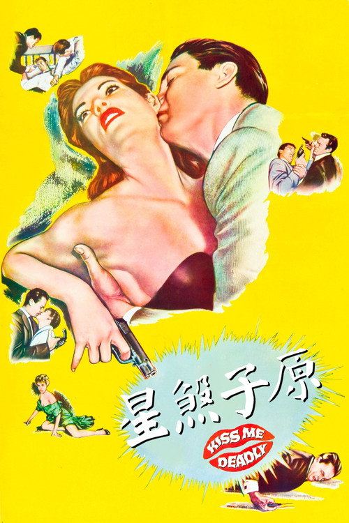
死吻 Kiss Me Deadly
「他要找的那个盒子，比他以为的热得多。」
剧情梗概
深夜的公路上，私家侦探迈克·汉默载了一个只穿着军用大衣、赤脚狂奔的女孩。车被劫停，他醒来时听见女孩被折磨致死，然后连人带车被推下悬崖。大难不死的汉默拒绝收手——从拳击手、验尸官到黑市医生一路往上查，所有人都在劝他停手，也有人出钱买他停手。线索最后都指向一个金属盒子，而等他终于打开它，冷战的那一半才刚刚开始。
亮点
- 罗伯特·奥尔德里奇自编自制自导，改编自米基·斯皮兰的迈克·汉默小说，但把原著彻底改写成了核时代的寓言。
- 它是「麦高芬」这个概念的极端演示：全片最重要的那个东西，从头到尾没人解释过它到底是什么。
- 开场那组倒置滚动的演职员表字幕，加上赤脚狂奔的女人，是黑色电影史上最著名的片头之一。
- 1999 年入选美国国家电影登记部；法国新浪潮（尤其戈达尔）把它当作「从低俗材料里拍出神秘感」的范本。
- 克洛里斯·利奇曼与玛克辛·库珀都是银幕处女作——利奇曼后来八次拿下艾美奖，是美剧史上获奖最多的演员之一。
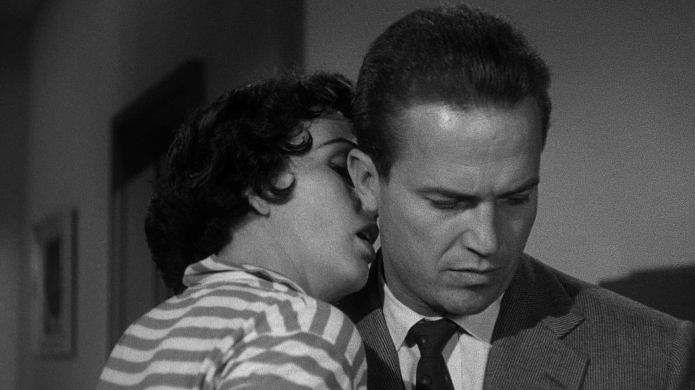
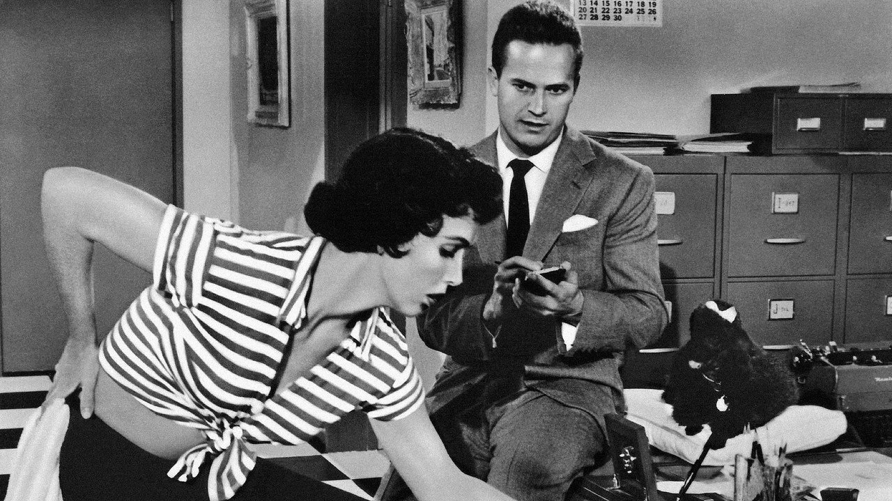
导演与主创 · 他们的历史作品
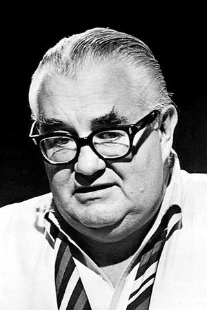
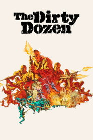
十二金刚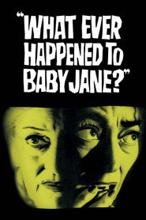
兰闺惊变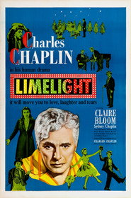
舞台春秋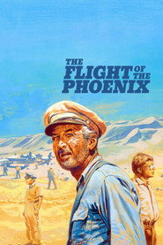
凤凰劫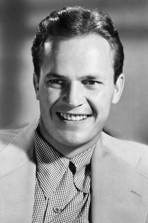
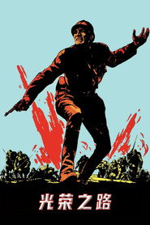
光荣之路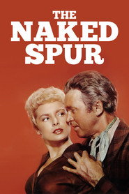
赤裸的马刺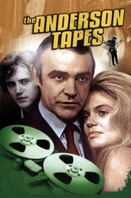
大盗铁金刚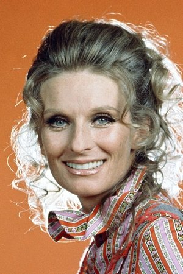
 疯狂原始人
疯狂原始人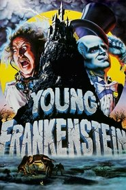
新科学怪人短评（轻微剧透）
《死吻》是那种「评分会骗你」的电影：豆瓣 7.0，烂番茄 98%。国内观众多半是被它粗粝的 B 级片质感劝退，而影评人看的是它做了一件当时没人敢做的事——把黑色电影推到自我毁灭。迈克·汉默是个不讨喜的主角：贪财、好色、动不动就动手，奥尔德里奇没打算让你喜欢他，他让你跟着这个人一路撞进一个比他大得多的东西里。全片的真相始终悬在空中：那个盒子里装的到底是什么，电影到最后也没说清楚，而这种「说不清楚」正是五十年代最真实的恐惧。它的暴力在今天看不算什么，但那份冷——所有人都在为了一件自己也搞不懂的东西杀人——是越看越冷的。缺点诚实说：剧本有几处松散，汉默的某些行为动机靠巧合推动。轻微剧透：最后打开盒子的不是主角，是那个一直站在他身后的人。
为什么值得一看
喜欢《马耳他之鹰》《历劫佳人》《唐人街》这类侦探黑色电影、又想看它在冷战里被推向极端的观众；对五十年代核焦虑有兴趣的人。含暴力与写实惊悚场面（1955 年尺度，血腥度不高）。内地未引进。
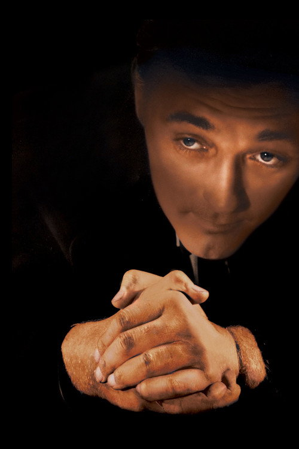
猎人之夜 The Night of the Hunter
「他左手写着 LOVE，右手写着 HATE。这两只手打了一辈子。」
剧情梗概
大萧条时期的西弗吉尼亚。本·哈珀为了两个孩子抢了两万美元，被判绞刑；临死前他把钱缝进女儿佩尔的布娃娃，让儿子约翰发誓一个字都不说。同牢房的假牧师哈里·鲍威尔出狱后循着线索找到本的遗孀薇拉，用一场场布道把整个镇子哄得服服帖帖，娶了她，然后开始逼问那笔钱的下落。孩子们知道钱在哪里，也知道说了会怎样。
亮点
- 查尔斯·劳顿一生只导演过这一部电影——它当年票房惨败（成本 79.5 万美元，首轮票房不足 7000 美元），他此后再没拿起导筒。
- 罗伯特·米彻姆的哈里·鲍威尔被 AFI 列为百年百大银幕反派第 29 名；指节上「LOVE / HATE」的纹身是影史最著名的一双手。
- 摄影是斯坦利·科尔特斯（《伟大的安巴逊》），德国表现主义的光影配上童话布景，黑白反差在 1955 年属于彻底的异类。
- 丽莲·吉许饰演的瑞秋·库珀是从默片时代活到有声片的巨星，她是全片唯一的「善」，而且是拿着枪的善。
- 河上漂流那场戏（水下摄影、漂浮的摇篮与死去的动物）至今仍是电影课上的必讲段落。
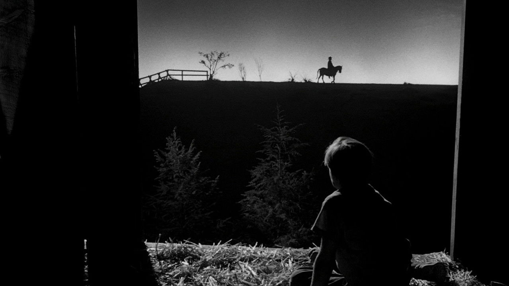
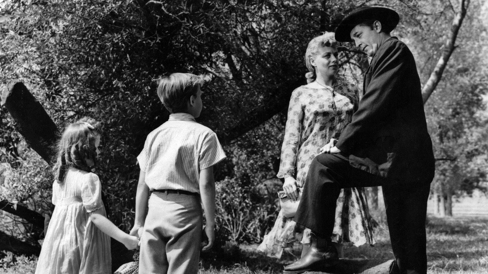
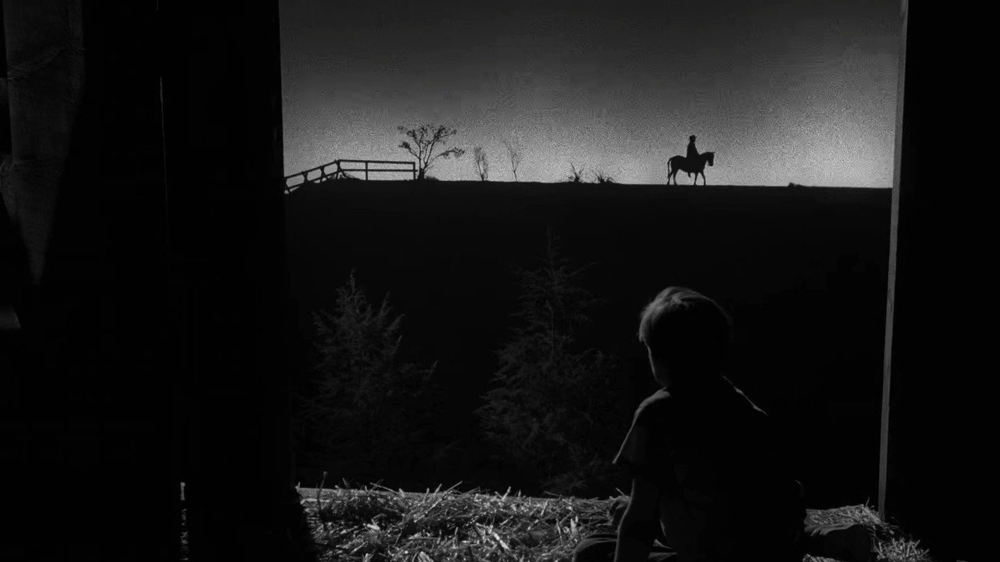
导演与主创 · 他们的历史作品
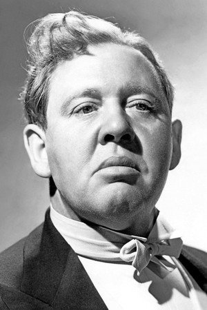
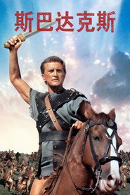
斯巴达克斯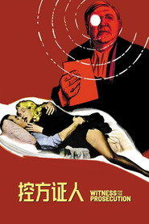
控方证人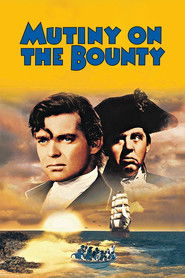
叛舰喋血记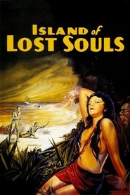
亡魂岛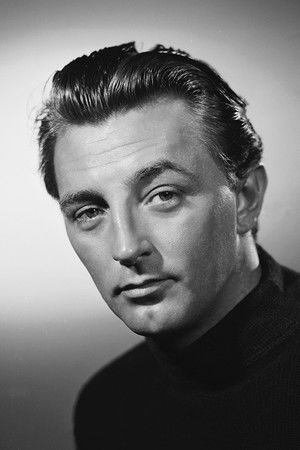
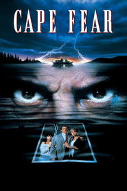
恐怖角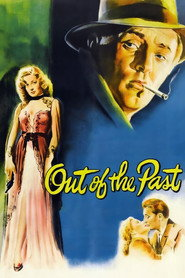
漩涡之外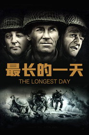
最长的一天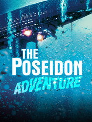
海神号历险记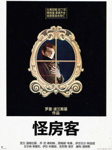
怪房客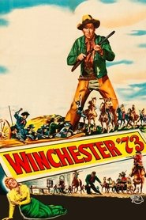
百战宝枪短评（轻微剧透）
《猎人之夜》是一部你会先觉得「奇怪」、然后才发现它根本没有别的拍法的电影。它一半是格林童话——两个孩子、一条河、一个披着黑袍的狼；另一半是德国表现主义——倾斜的构图、贴着墙的巨大阴影、月光白得像骨灰。劳顿没有把它做成惊悚片，他做成了一首童谣，而且是那种唱着唱着就会突然停下来的童谣。米彻姆的牧师哈里是影史上最令人不安的反派之一，不是因为他狠，而是因为他真诚：他真的相信自己说的是真理，他的每一句布道都不是谎话，只是顺序错了。这也是本片真正的主题——善与恶说着同一套语言，区别只在于你用它来喂饱谁。丽莲·吉许在结尾撑起了全部的暖意，她守夜唱诗那场戏会让前面九十分钟的冷都变成值得的。轻微剧透：孩子们最后什么都没说，而钱一直在最显眼的地方。
为什么值得一看
喜欢《闪灵》《它在身后》《仲夏夜惊魂》这类「美得让人不安」的恐怖片观众；想看黑色电影与童话怎么长在一起的影迷。无直接血腥，但心理压迫感极强（1955 年尺度）。内地未引进，流媒体可看。

历劫佳人 Touch of Evil
「一个警长用三十年，证明自己从来没有抓错过人。」
剧情梗概
美墨边境小镇洛斯罗布雷斯。一枚藏在汽车里的炸弹炸死了地产大亨，墨西哥缉毒官瓦加斯带着新婚妻子苏茜恰好目击。当地警长汉克·昆兰——一个三百磅重、跛脚、靠直觉办案的老油条——在几小时之内「找到」了凶手，并且决定栽赃。瓦加斯知道昆兰在捏造证据，因为这是昆兰三十年来一直做的事：他从不抓错人，因为他先决定谁有罪，再给他安证据。
亮点
- 普遍被认为是「古典黑色电影的终结之作」，也是奥逊·威尔斯在好莱坞最后一部掌握剪辑权的作品。
- 开场那三分钟长镜头（跟拍一辆车穿过整个街区、最后爆炸）是影史被分析最多的镜头之一。
- 威尔斯亲自演昆兰，用增重、假体和一副烂牙把自己彻底毁掉——他说这是他演得最好的角色之一。
- 查尔登·海斯顿当年是被请来演墨西哥人的，威尔斯让他留胡子、涂深肤色，这个选角至今仍有争议。
- 1993 年发行了按威尔斯 58 页备忘录重剪的「修复版」，与 1958 年公映版几乎是两个不同的电影。


导演与主创 · 他们的历史作品
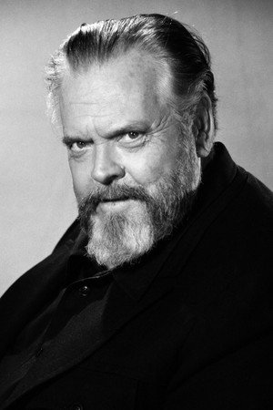
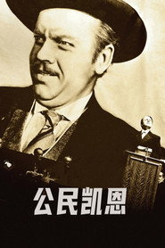
公民凯恩短评（轻微剧透）
《历劫佳人》讲的是一种最彻底的腐败：不是收钱，而是相信自己的直觉高于事实。昆兰不是坏警察，他是「好警察」逻辑走到尽头的样子——他抓了一辈子人，从没错过，于是他再也不需要证据了。威尔斯把这个人拍成一头衰老、肿胀、喘着粗气的巨兽，而他自己演得一点都不夸张：你会同情他，这才是全片最可怕的地方。技术上它是教科书：开场的长镜头、边境小镇的噪声与喧闹、永远倾斜的构图、被割裂的剪辑节奏，每一样都在此后六十年被反复模仿。它也是黑色电影真正的句号——此后这个类型只能被怀旧地重拍。缺点要说：111 分钟里信息密度很高，第一次看容易跟不上谁是谁；海斯顿的墨西哥口音确实出戏。轻微剧透：昆兰最后听到的那段录音，是他自己三十年来的全部辩护。
为什么值得一看
喜欢《马耳他之鹰》《死吻》《唐人街》这类侦探 / 黑色电影、又想看长镜头与剪辑教科书的影迷。含部分暴力与惊悚场面（1958 年尺度）。内地未引进。
无间道 Infernal Affairs
「对不起，我是警察。」——谁知道。
剧情梗概
1991 年，黑帮分子刘建明奉韩琛之命考进警校，十年后成了警队最被看好的明日之星；同一年，警校学员陈永仁被上司黄志诚派去黑帮做卧底，十年后成了韩琛最信得过的人。两边同时发现内部有鬼。两个人都开始找对方，也都开始害怕一件事：在对方找到自己之前，先被自己人认出来。
亮点
- 刘伟强、麦兆辉联合执导，庄文强编剧；麦兆辉说灵感来自吴宇森《喋血双雄》里「警察与杀手」的镜像关系。
- 它把香港警匪片从「枪火浪漫」拉回了「身份焦虑」，此后被马丁·斯科塞斯翻拍成《无间道风云》，拿下奥斯卡最佳影片。
- 梁朝伟与刘德华天台对峙那场戏，是整个 2000 年代华语电影被引用最多的段落之一。
- 「我想做个好人」之所以成了流行语，正因为它在片中是由最不该说这句话的人说出口的。
- 2003 年金像奖拿下最佳电影、最佳导演、最佳男主角（梁朝伟）、最佳男配角（黄秋生）等七项大奖。
导演与主创 · 他们的历史作品
 十面埋伏
十面埋伏 狄仁杰之通天帝国
狄仁杰之通天帝国短评（轻微剧透）
《无间道》真正厉害的地方，是它拍的不是警匪，是「我是谁」这件事有多晚才被说出口。刘建明和陈永仁其实在做同一件事：扮演一个不是自己的人，演到连自己都快信了。区别只在于，一个想洗白，一个想归队——但电影很狠地告诉你，这两个愿望在结构上是一样的，都没法完成。刘伟强把整部片拍得干净、克制、几乎没有浪漫化的枪战，所有重量都压在两个人各自独处的时刻：陈永仁去看心理医生时那句「我好久没睡过一个好觉」，比任何动作戏都重。梁朝伟的眼睛和刘德华的下颌线各撑起一半的戏，黄秋生那场坠楼是全片唯一一次真正的失控。它也不是没有妥协：内地上映版改了结局，这个版本至今仍被影迷争论。轻微剧透：最后活着的那个人，得用一辈子继续演下去。
为什么值得一看
喜欢《暗战》《枪火》《神探》这类港式警匪、以及《消失的爱人》《非常嫌疑犯》这类身份悬疑的观众；想补华语电影必看清单的人。含枪战与暴力场面（IIB 级）。内地有删减公映版。
谜一样的双眼 El secreto de sus ojos
「一个人可以改掉一切——除了他曾经有过的热情。」
剧情梗概
1974 年的布宜诺斯艾利斯。司法助理本杰明·艾斯玻希多接手一起年轻女教师被奸杀的案件，受害者的丈夫里卡多每天坐在火车站等一个不存在的凶手。本杰明很快抓到嫌疑人，但嫌疑人在权力干预下被释放、随后消失在人海。二十五年后，退休的本杰明决定把这段往事写成小说，于是重新推开那扇门——然后发现里卡多的家里，藏着一件他从来没敢问出口的事。
亮点
- 第 82 届奥斯卡最佳外语片，也是阿根廷第二次拿下这一奖项（上一次是《官方说法》）。
- 改编自爱德华多·萨切里同名小说，萨切里本人参与编剧；片名直译是「他们眼中的秘密」。
- 足球场那场四分钟的空中长镜头（从看台俯冲进球场抓人）没有用绿幕，是实拍加后期合成的早期范例。
- 里卡多·达林（《荒蛮故事》《九个皇后》）与索莱达·维拉米尔贡献了西班牙语影坛最克制的一对表演。
- 2015 年被翻拍成美版《聚焦谋杀》（朱莉娅·罗伯茨 / 妮可·基德曼 / 切瓦特·埃加福），口碑远逊原作。
导演与主创 · 他们的历史作品
 英勇废柴
英勇废柴 地牢回忆
地牢回忆短评（轻微剧透）
《谜一样的双眼》常被当成悬疑片推荐，其实它讲的是「一个人能为一段记忆做到什么地步」。里卡多的妻子被杀，二十五年里他做的事只有一件：每天坐同一班火车、等同一个不可能出现的人。本杰明一开始觉得这是执念，后来才发现那是他唯一还能为妻子做的事——而自己当年放走的那个凶手，是被权力一句话抹掉的。坎帕内利亚把两条时间线缝得非常细：1974 年的光线是暖黄、发闷的，2000 年的布宜诺斯艾利斯灰白、干燥，你会看见时间是怎么把一个人体内的东西一点点抽干的。那场足球场长镜头当然是炫技，但它服务的是情绪——一次抓捕被拍成了一次公开的、众目睽睽下的命运落点。缺点要说：129 分钟对现代观众偏长，中段节奏略缓。轻微剧透：真正的秘密不在凶手那里，而在那个每天等车的人的家里。
为什么值得一看
喜欢《杀人回忆》《看不见的客人》《海市蜃楼》这类「多年后重查旧案」悬疑片的观众；对司法、记忆与时间主题有兴趣的人。含奸杀案描写与部分暴力（阿根廷 16 禁）。内地未引进，流媒体可看。
潜行者 Stalker
「『区』里有一间屋子，进去的人会得到他心里最深的那个愿望。」
剧情梗概
某年，一颗陨星（或者别的什么）落在一座无名小镇，那里从此出现「区」——一个被军队封锁的禁地，物理法则在其中失效。有个被称作「潜行者」的人以带人偷渡进区为生。这一次他带两个人：一个想找回灵感的作家，一个想搞清楚真相的教授。三人在荒废的厂房、积水的隧道与长草的沙丘间穿行，目标是区中心那间据说能实现愿望的房间。而他们越靠近，就越不确定自己想不想要它。
亮点
- 塔可夫斯基在苏联拍的最后一部电影，改编自斯特鲁伽茨基兄弟小说《路边野餐》。
- 全片用极长的镜头（平均镜头长度约 60 秒）与缓慢的推轨，把「时间本身」变成了真正的主角。
- 彩色与黑白胶片的切换，是胶片出了事故后的主动选择——塔可夫斯基说那批柯达胶卷坏了，他干脆将错就错。
- 拍摄地是爱沙尼亚一座废弃电厂附近，剧组长期处在有毒环境中；多年后塔可夫斯基本人与多位主创先后因肺癌去世。
- 它是《湮灭》《遗落战境》以及一切「禁区科幻」的精神源头，尽管没有一部敢这么慢。
导演与主创 · 他们的历史作品
短评（轻微剧透）
《潜行者》是一部你必须先放弃「它在讲什么」才能看下去的电影。表面是一个科幻设定（禁区、愿望房间），实际是一次关于「人到底想要什么」的审问。三个人各自带着目的进区：作家怕自己已经写不出东西，教授想证明那里什么都没有，潜行者则以带人进去为生——而房间真正可怕的地方在于，它给你的不是你说出口的那个愿望，是你心里最深、最没敢承认的那个。塔可夫斯基用近乎静止的长镜头把这个过程拍成了一种生理体验：水下的铁罐、漂浮的针管、被风压低的草，你会真的觉得时间在变重。它当然不适合所有人——163 分钟、几乎没有配乐、大段对白像哲学课。但如果你能沉进去，它会在之后几周一直跟着你。轻微剧透：三个人最后都走到了门口，但没有一个人走进去。
为什么值得一看
喜欢《飞向太空》《2001太空漫游》《湮灭》这类思想型科幻的观众；愿意为一部电影交出三小时注意力的人。无血腥，属心理与哲学向（苏联时期尺度）。内地未引进。
德州电锯杀人狂 The Texas Chain Saw Massacre
「它其实几乎没给你看血——你只是以为你看到了。」
剧情梗概
1973 年的夏天，五个年轻人开车穿过德州乡下，去看祖父的墓地有没有被人盗挖。路上他们载了一个举止怪异的搭车客，把他赶下车，随后车开到一个没油的加油站。天黑之前，他们走进了路边那栋挂着风干兽骨的房子。一个戴着人皮面具、拎着电锯的巨汉「人皮脸」出来迎接他们。剩下的八十分钟，是一个女孩不断试图从这栋房子里逃出去的过程。
亮点
- 托比·霍珀用 8 万美元拍出来的作品，全球票房超过 3000 万美元，是史上最赚钱的独立片之一。
- 豆瓣 7.4 而 Metacritic 高达 91——它是「影评人奉为经典、普通观众觉得太脏」的典型。
- 全片真正的血腥镜头极少，恐怖几乎全部来自声音设计、剪辑节奏与贡纳尔·汉森的肢体表演。
- 片名里的 Chain Saw 被故意拆成两个词，是它最广为人知的细节之一。
- 它开创了「最后女孩」（Final Girl）与「乡下退化家族」两个沿用至今的恐怖片模板。
导演与主创 · 他们的历史作品
短评（轻微剧透）
第一次看《德州电锯杀人狂》的人几乎都会惊讶：它比传说中干净得多。真正让你受不了的不是画面，是声音——电锯的持续轰鸣、金属门被撞开的那一下、莎莉一直不停的尖叫，这些东西被混在一起，制造出一种你无法逃开的生理不适。霍珀是个很聪明的导演：他知道预算不够拍血，于是拍「你以为自己看到了什么」。人皮脸也不是怪物，他更像一个被宠坏、被吓到、不知道自己在做什么的大男孩，这比任何反派宣言都更让人毛骨悚然。而莎莉这个角色之所以重要，是因为她不是靠聪明活下来的，她靠的是一直跑、一直叫、一直不肯停下来。缺点诚实说：它确实很脏、很吵、很粗粝，83 分钟全程没有喘息；豆瓣 7.4 也说明国内观众对它的接受度远不如海外影评人（Metacritic 91）。轻微剧透：天亮之后逃出来的那个人，并没有真的逃出来。
为什么值得一看
喜欢《逃出绝命镇》《它在身后》《野蛮人》这类写实恐怖的观众；想理解「剥削恐怖片为什么会被写进电影史」的人。虽血腥镜头少，但整体压迫感极强（R 级），心理承受力弱者慎入。内地未引进。
梦之安魂曲 Requiem for a Dream
「他们都只是想要一个更好的自己。」
剧情梗概
布鲁克林的夏天。哈里和女友玛丽安想开一家服装店，为了凑钱他们开始倒卖海洛因，然后自己也陷了进去。哈里的母亲萨拉独居、整天看电视，最大的心愿是上电视——为了穿回当年那条红裙子，她开始吃减肥药，而药里是安非他命。哈里的朋友泰伦想混进黑帮。四条线在同一个夏天一起往下坠，各自用不同的姿势。
亮点
- 阿伦诺夫斯基的第二部长片，改编自小胡伯特·塞尔比 1978 年的小说（塞尔比本人还在片中客串）。
- 艾伦·伯斯汀凭萨拉一角获奥斯卡影后提名（《驱魔人》之后她的又一次提名）；她为这个角色真的减重又增重。
- 全片使用「嘻哈蒙太奇」：吸毒那几段由 19 个极短镜头（瞳孔、针管、红细胞）拼成，平均不到半秒一个。
- 克林特·曼塞尔的配乐《Lux Aeterna》后来被《指环王》预告片与无数预告借用，成了最被误用的现代古典乐之一。
- 在美国以「无分级（Unrated）」上映，影院被要求严查未成年人；长期被列入各种「世界十大禁片」名单。
导演与主创 · 他们的历史作品

 黑天鹅
黑天鹅 母亲！
母亲！ 诺亚方舟：创世之旅
诺亚方舟：创世之旅 驱魔人
驱魔人 星际穿越
星际穿越
 X特遣队
X特遣队 搏击俱乐部
搏击俱乐部 Morbius
Morbius短评（轻微剧透）
《梦之安魂曲》的名字起反了——Requiem 是安魂曲，但它没有安慰任何人。它真正讲的是「成瘾」这件事的入口有多普通：哈里和玛丽安想开店，萨拉想上电视，泰伦想被人看得起，这些愿望每一个都正当得不能再正当。阿伦诺夫斯基没有拍毒品有多可怕，他拍的是「一个普通愿望是怎么被一点点换成另外一种东西的」。技术上它是教科书级的：吸食那几段把 19 个不到半秒的镜头砸在一起，你会生理性地理解什么叫「爽」；分屏、鱼眼、延时摄影把四个人隔在同一座城市里。伯斯汀的萨拉是全片最狠的一条线——她不是受害者，她是被「被看见」这件事毁掉的。这部片我推荐一次，不推荐第二次：它太清楚了，清楚到看完会难受很久。轻微剧透：最后每个人都被送回了自己最想回去的那个瞬间，然后镜头离开了。
为什么值得一看
喜欢《梦之安魂曲》式心理写实、《某种物质》《鹅毛笔》这类「往下坠」电影的观众；对成瘾、孤独与欲望主题有兴趣的人。含大量毒品使用、性场面与精神崩溃描写（无分级 / 18 禁），心理承受力弱者慎入。内地未引进。
魔鬼代言人 The Devil's Advocate
「虚荣，是我最爱的原罪。」
剧情梗概
佛罗里达的年轻辩护律师凯文·洛马克斯从没输过——他用一句「我不在乎他有没有罪」，帮一个猥亵儿童的老师脱了罪。随后纽约最大的律所开出天价请他，老板约翰·米尔顿是一位手眼通天、说话像诗一样的老人。凯文带着妻子玛丽安搬进曼哈顿的顶层公寓，从此赢的每一场官司都比上一场更不干净。等他终于想抽身时，已经没有人告诉他出口在哪里了。
亮点
- 改编自安德鲁·尼德曼 1990 年同名小说，片名直译是「魔鬼的辩护人」。
- 阿尔·帕西诺的米尔顿是他生涯后期最被反复引用的角色，那句「虚荣，是我最爱的原罪」出自弥尔顿《失乐园》。
- 基努·里维斯为接这部片主动大幅降薪，省下的预算用来请帕西诺——这段是当年业内广为流传的事。
- 结尾那场戏（不剧透）被认为是 90 年代最好的「选择」段落之一，也是它被讨论至今的原因。
- 豆瓣 8.3 而烂番茄仅 66%、Metacritic 60——海外影评人普遍嫌它说教夸张，国内观众则把它当警世寓言来读。
导演与主创 · 他们的历史作品
短评（轻微剧透）
《魔鬼代言人》是一部「你知道它要说什么、但还是被它说动了」的电影。它的结构完全是浮士德：一个人得到他想要的一切，代价在最后才被出示。真正聪明的地方在于，米尔顿从头到尾没骗过凯文——他每次都说得很清楚，而凯文每次都选择听不见。帕西诺演得太享受了，那种戏剧化的、几乎是舞台腔的念白，恰好适合一个活了几百年的角色；而基努·里维斯的木讷在这里反倒成了优点——他的凯文是一个刚学会「我不在乎」就被这句话吞掉的人。影片后半段确实失控：超自然的暗示、那场著名的长篇独白、以及最后的处理，都让它从心理惊悚滑向了寓言剧，这也是海外评分只有 66% 的原因。但它的核心提问至今锋利：一个人到底是在被诱惑，还是在一开始就已经替诱惑做好了准备。轻微剧透：米尔顿给他的从来不是选择，是「你已经选过了」这件事本身。
为什么值得一看
喜欢《一级恐惧》《致命诱惑》《消失的爱人》这类「体面人一步步失控」惊悚的观众；对野心、道德与自由意志主题有兴趣的人。含暴力、性与精神崩溃描写（R 级）。内地未引进。